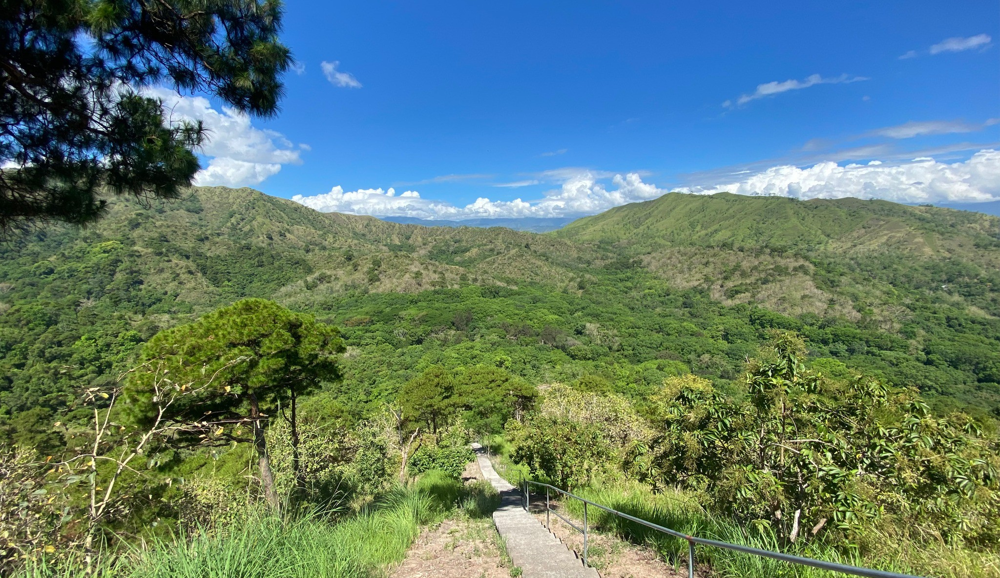
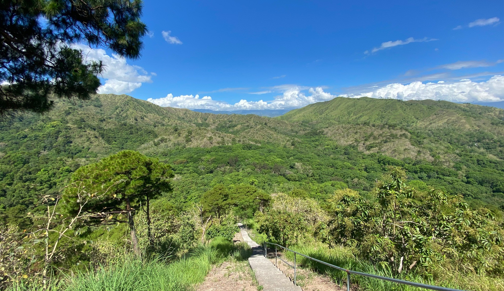
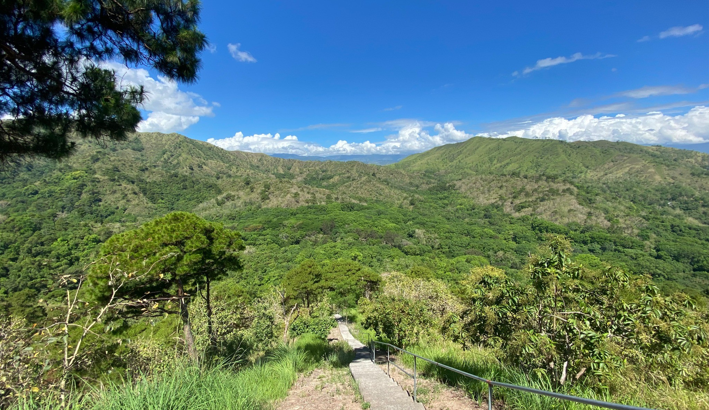
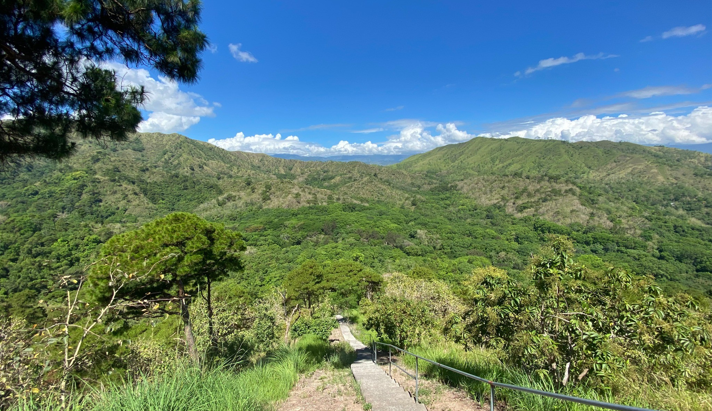

Mt. San Vicente is a scenic destination in Dupax del Sur, known for its 600-step footpath trail that leads visitors to its summit. The climb offers both a physical challenge and a rewarding experience, as each step brings breathtaking views of the surrounding landscapes. At the peak, visitors are greeted with panoramic sights of the town, rolling hills, and lush greenery—making the journey both a test of endurance and a moment of reflection. Mt. San Vicente is not only a place for adventure and nature appreciation, but also a site of peace, attracting hikers and sightseers alike.